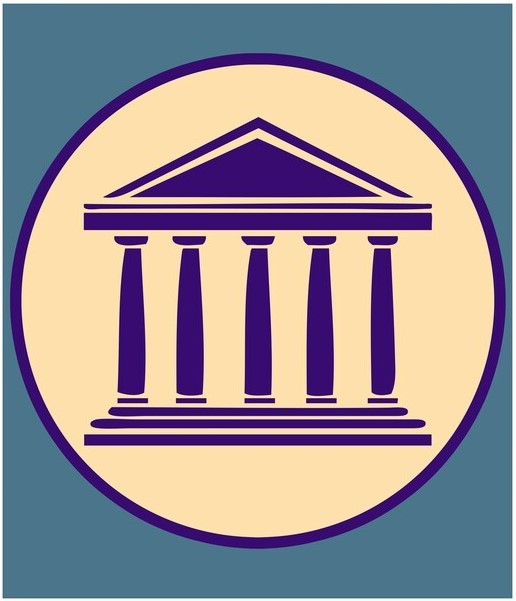

La mitología es un campo muy extenso, donde se tratan mitos o leyendas de diferentes tipos dependiendo de la región en la que son relatados dentro de las variaciones podemos tener:
| Mitologías |
|---|
| Griega |
| Artúrica |
La mitología griega está formada por un conjunto de relatos cuyo origen se remonta a una etapa anterior a la ocupación de la península griega, lo que se demuestra por el paralelismo con otras mitologías de origen indoeuropeo. Este conjunto de relatos no constituyen una religión en sí misma, pero sí constituyen un reflejo de ciertas creencias de los antiguos griegos respecto al universo y el hombre. Estos relatos de transmisión oral fueron de alguna manera "fijados" por escrito por poetas, dando lugar a veces a las distintas versiones que conservamos de ellos. La mitología griega consiste explícitamente en una extensa colección de relatos e implícitamente en artes figurativas, como cerámica pintada y ofrendas votivas. Los mitos griegos explican los orígenes del mundo y detallan las vidas y aventuras de una amplia variedad de dioses, héroes y otras criaturas mitológicas. Estos relatos fueron originalmente difundidos en una tradición poética oral, si bien actualmente los mitos se conocen principalmente gracias a la literatura griega.

Zeus, Rey de los dioses del Olimpo y padre de muchos de ellos, era el dios del cielo y del trueno, hermano de Hades y de Poseidón. Hermano y esposo de Hera,
tuvo muchas amantes humanas y divinas, dando origen a diversos linajes heroicos.
En la mitología griega, Zeus era el rey de los dioses en el panteón, gobernando tanto a divinidades como a seres humanos desde el Monte Olimpo. Además de esto, se le conoce como el dios del rayo y de los cielos, o por mus múltiples epítetos.
Por ejemplo, Zeus Cronion, es decir, que era hijo de Cronos; o portador de la égida (su escudo) o quien lleva la égida, epíteto que podemos encontrar en la obra de Homero; u Olimpio, en tanto que reinaba en el Olimpo; y por símbolos como el águila, el toro, el roble y el rayo.
Zeus era hijo de los titanes de la primera generación: Cronos, su padre, y Rea, su madre. Cronos era hijo, a su vez, de Gea, divinidad femenina de la tierra, y Urano, divinidad masculina del cielo.
Al padre de Zeus se le representaba con frecuencia con una guadaña o una hoz, con la cual destronó a su padre Urano luego de castrarlo. Este último le advirtió a Cronos que uno de sus hijos lo destronaría a él también.
Por esto Cronos se comió a todos los hijos que tuvo con Rea, los cuales fueron Hestia, Deméter, Hera, Hades y Poseidón, pues temía que se cumpliera lo profetizado por su padre.
Esto puede encontrarse representado en la pintura de Goya, Saturno devorando su hijo. Sin embargo, Rea pidió consejo a Urano cuando sintió que iba a dar a luz a un nuevo hijo, ya que quería castigar a Cronos por lo que le había hecho tanto a sus padres,
como a sus hermanos, los Hecatónquiros y los Ciclopes, a los cuales había encerrado en el tártaro; así como por lo que había hecho a sus propios hijos.
Es así como Rea viaja hasta la isla de Creta y da a luz a Zeus ahí. Para engañar a su esposo, le dio de comer una piedra envuelta en túnicas haciéndole creer que era su hijo.
En la mitología griega, Zeus, la deidad más importante y rectora, supo tener una enorme cantidad de mujeres a su alrededor y prácticamente con todas generó descendencia, sin embargo,
hubo una mujer que gozó del privilegio de ser la esposa legítima de este mandamás griego: su hermana Hera , y entonces como tal se erigió como la diosa representante del matrimonio y de las mujeres.
Si bien Hera gozaba del reconocimiento formal de ser «La Mujer de Zeus», casi toda su existencia se la pasó combatiendo contra las amantes de su esposo y la descendencia de éste; celosa y vengativa ,
fueron los rasgos más distintivos y característicos de Hera, aunque, cabe destacar,
que las deidades no fueron el único objetivo de la furia de Hera, también supieron ser blanco de su odio aquellos mortales que a su criterio la provocaban, tal es el caso de Pelias, quien se ganó su odio tras elegir a Afrodita como la diosa más bella del Olimpo.
Los celos que le despertaban las amantes y los hijos ilegítimos de Zeus desarrollaban en ella tremendas iras, imparables hasta por el propio Zeus, y en el marco de las mismas sabía planear maléficos planes para castigar a quienes osaban quitarle a su marido.
Ejecutaba persecuciones contra las amantes, enviaba a matar a algún hijo ilegítimo, entre otras acciones criminales.
Los celos son sin dudas una de las respuestas emocionales más características de los seres humanos y asimismo de las más frecuentes de apreciar cuando una persona siente que algo que ama o es propio corre el riesgo de ser arrebato por otro.
Y justamente ello le sucedía a Hera cuando su marido Zeus prestaba atención de otras deidades o mortales.
Claro, se enfurecía como nadie y era capaz de cualquier cosa, como ya mencionamos.
Poseidón es uno de los principales dioses del panteón clásico. Junto a Zeus y Hades, Poseidón tomó parte en el reparto de las áreas de influencia de los dioses sobre el universo, correspondiéndole el gobierno de las aguas marinas y subterráneas.
Poseidón es, por tanto, el señor de los mares y los océanos. Dada la importancia que el mar tuvo para la cultura griega, resulta comprensible que Poseidón fuese considerado como una de las divinidades más poderosas, a la que los hombres debían rendir culto si deseaban que sus viajes y empresas marineras tuvieran un final feliz.
Poseidón era uno de los hijos varones de Cronos y Rea. Según el poeta Hesíodo relata en su Teogonia, el pequeño Poseidón fue una de las víctimas de la furia devoradora de su padre.
Cronos, para evitar que uno de sus vástagos le destronara como él mismo había hecho con su propio padre, les devoraba uno a uno a medida que éstos iban naciendo.
De este modo acabó Poseidón engullido por su propio padre.
Otras versiones más tardías del mito nos cuentan que Poseidón se salvó de este destino gracias al engaño perpetrado por su madre, Rea, que salvo al pequeño junto a su hermano Zeus, poniendo a ambos a salvo de la ira de Cronos.
Diodoro de Sicilia cuenta que el pequeño Poseidón fue escondido en la isla de Rodas, donde fue criado por los telquines, nueve hermanos con cabeza de perro y cola de pez. Los telquines eran grandes conocedores de la metalurgia y el arte de la herrería, y, cuando el pequeño Poseidón creció,
fabricaron para él la que sería su arma predilecta: El tridente.
Fuese engullido por su padre o no, Poseidón se unió a su hermano Zeus en la lucha contra Cronos y los titanes, lucha en la que los dioses más jóvenes salieron victoriosos. Fue ese el momento en el que Zeus, Hades y Poseidón se repartieron, según Homero, el gobierno de la tierra. Mientras Zeus escogía los cielos como
su ámbito de influencia y Hades optaba por el mundo subterráneo y las moradas de los difuntos, Poseidón se convirtió en el rey soberano de las aguas.
Es en esta faceta de señor de los mares en la que los antiguos griegos le rindieron culto de forma mayoritaria. Sin embargo, los poderes de Poseidón no terminaban aquí, pues, según una tradición muy antigua, Poseidón era también el responsable de los terremotos y los movimientos de tierras, posiblemente al relacionar los antiguos griegos estos
fenómenos con algún tipo de alteración en las aguas subterráneas sobre las que flotaba el mundo.
Apolo ha sido una de las deidades más importantes dentro de la cultura griega primero, y luego en la romana; las múltiples y variadas actividades que desplegó lo convirtieron en uno de los dioses más polifacéticos de la historia de la mitología,
porque a Apolo se lo ha reconocido como dios de la luz, dios del sol, de la verdad, del tiro con el arco, de la profecía, de la música, de la medicina y la curación, de la vegetación, las artes, la poesía, entre lo más destacado.
Como sucedía cada vez que Hera, esposa legítima de Zeus, descubría algún engaño amoroso de su marido a sus espaldas, su cólera no tenía límites y era capaz de pergeñar los más tremendos y sádicos planes contra aquellos que atentaban contra la estabilidad de su matrimonio.
Y claro, como no podía ser de otra manera, cuando se enteró que Leto iba a dar a luz a hijos extramatrimoniales de su esposo es que se desataría su venganza cruel contra ella y la descendencia, en este caso Apolo y su hermana melliza Artemisa.
La ira de Hera al enterarse de su nacimiento
Según la leyenda cuenta, cuando Hera, esposa de Zeus, supo del inminente nacimiento de Apolo trató de impedirlo a toda costa, de todas maneras, Apolo nació y habría sido su melliza Artemisa, quien ayudo a su madre Leto para que Apolo naciera.
Tan solo transcurridos cuatro días de su nacimiento, Apolo, en defensa de su madre, sobre la cual Hera había lanzado una maldición, luchó contra un dragón ctónico y en este contexto habría sido que Hefesto (dios del fuego) le concedió a Apolo el arco y la flecha que lo acompañarían por siempre.
Hera no había dejado un solo lugar libre de su accionar mesiánico para que Leto diese a luz a sus hijos.
Nadie se atrevía a acogerla por temor a los designios de Hera.La isla Ortigia fue la única que la recibió y allí nace Apolo.Por esta causa se instauró a la misma en la isla del centro del mundo y se la llamó Delos la brillante.En el pie del único árbol que existía en esta isla estéril, Leto, esperó la llegada de sus hijos por nueve días, porque Hera tenía retenida a la divinidad que asistía a los partos felices (Ilítia).
Muchas deidades ayudaron a Leto en estos momentos, sin embargo, nada podían hacer por su parto feliz.
Sería la diosa Iris quien se acercó a Hera y le ofreció un precioso collar para que dejase que Ilítia ayudase a Leto.
Primero nace Artemisa y luego ésta ayuda a su madre para que dé a luz a Apolo.
Ni bien nació Apolo aparecieron siete cisnes sagrados anunciando que se trataba del séptimo día del mes.
Inmediatamente después, Zeus, enviará a su hijo varios regalos como ser una mitra de oro, un carro tirado por cisnes y una lira que luego usaría muchísimo.
Arturo, Ginebra, Lanzarote, Merlín, la Mesa Redonda, Excalibur, Camelot…
Hace tiempo que los protagonistas del mundo artúrico pasaron a formar parte del
imaginario colectivo occidental. Sus aventuras, ideadas con maestría por los escritores del
Medievo, se enmarcan en la conocida como Materia de Bretaña.
A tenor de esto, la orden caballeresca habría sido creada por Arturo en el momento en el que fue proclamado rey de Britania y estableció su corte en Camelot. Sería el rey de Leodegrance, padre de su esposa Ginebra, quien le regalaría a este la famosa tabla de madera que daría origen a la orden y en torno a la que los caballeros se reunirían. Se dice que la mesa tenía una capacidad total para 150 plazas, aunque no siempre todas ellas estaban cubiertas, y en sus asientos se sentaron los más dignos y nobles caballeros que existieron en la época. Lo cierto es que la gran importancia que se le fue dando a la Mesa radicaba en el hecho de que, por su forma, nadie la presidía por lo que las jerarquías quedaban en teoría anuladas en el momento en que los caballeros se sentaban en ella. No sería hasta que se comenzase la intensa búsqueda para localizar el Santo Grial cuando la Orden comenzaría a decaer, ya que muchos de estos caballeros partieron a la aventura; su final definitivo llegaría cuando la malvada hermana del rey, la bruja Morgana, sacó a la luz el amor adúltero que existía entre la reina Ginebra y el primer caballero del rey, Lancelot, lo que llevaría al Reino a una Guerra Civil y traería la muerte del rey a manos de Mordred, hijo de Morgana. Cuenta la leyenda que el mítico rey está enterrado en la isla de Avalón. ¿Quienes eran los Caballeros de la Mesa Redonda? Como os decía, cuentan las historias que hasta 150 caballeros podían llegar a sentarse en torno a aquella mesa, pero no todos adquirieron igual fama y prestigio ni fueron tan cercanos al mítico Rey Arturo. Sir Thomas Mallory fue quien mejor relató las andanzas del Rey y quien los mencionó en sus libros sobre el ciclo artúrico. De todos ellos, sin duda, los nombres de los 12 caballeros de la Mesa Redonda, más conocidos, fueron:
| Los doce caballeros fueron |
|---|
| 1.- El Rey, Arturo Pedragón |
| 2.- Sir Bedivere |
| 3.- Sir Kay |
| 4.- Sir Bors de Ganis |
| 5.- Sir Lancelot |
| 6.- Sir Tristán de Leonis |
| 7.- Sir Gawain |
| 8.- El rey Pellinore |
| 9.- Sir Lamorak de Gales |
| 10.- Sir Galahad |
| 11.- Sir Gareth |
| 12.- Sir Percival |